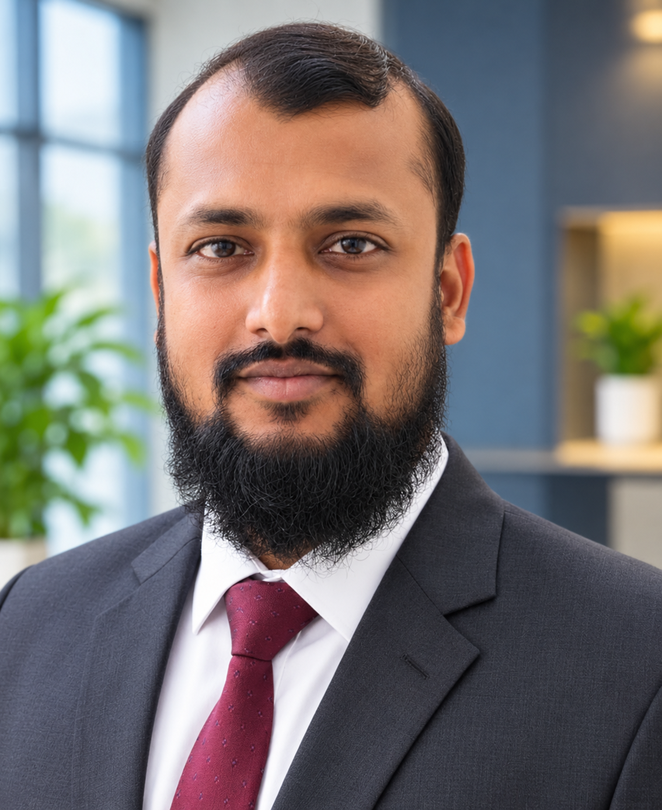

Infrastructure & Operations
LAN infrastructure, Active Directory, network troubleshooting, endpoint setup, NAS and IP telephony support.
IT infrastructure and technical support professional with hands-on experience across enterprise systems, networking, end-user support and ERP implementation.

I am an IT professional with experience supporting business operations through reliable IT infrastructure, network services, hardware and software support, and ERP user enablement. My work includes maintaining systems, troubleshooting technical issues, coordinating with vendors, and helping users adopt business applications.
LAN infrastructure, Active Directory, network troubleshooting, endpoint setup, NAS and IP telephony support.
ERP implementation and user training, application support, ICT inventory and operational coordination.
End-user assistance, remote support, access control, CCTV systems, data security and backup systems.
Experience details are presented from the supplied CV. Dates not stated in the source CV are intentionally not added.
Core skills based on the experience and skills listed in the CV.
Daffodil International University (DIU)
Result: 3.41 · Year: 2015
Pabna Polytechnic Institute, Pabna
Result: 3.25 · Year: 2011
Chakchatiany High School, Pabna
Result: 4.19 · Year: 2007
Web Development: HTML, CSS, OOP, PHP, JavaScript, AJAX, WordPress and CodeIgniter — IBCS, Dhaka (2014, 90 hours).
Windows Server 2003: Proxy, FTP, DHCP, terminal, print, web, DNS and TCP/IP services — BBIT, Dhaka (2010, 3 months).
Language proficiency stated in CV: English — Reading High, Writing Medium, Speaking Medium; Hindi — Reading Low, Writing Low, Speaking High.
For IT infrastructure, systems, network support and ERP-related roles.
Current location: Gazipur, Bangladesh · Nationality: Bangladeshi. Work authorisation details have not been included because they were not provided.